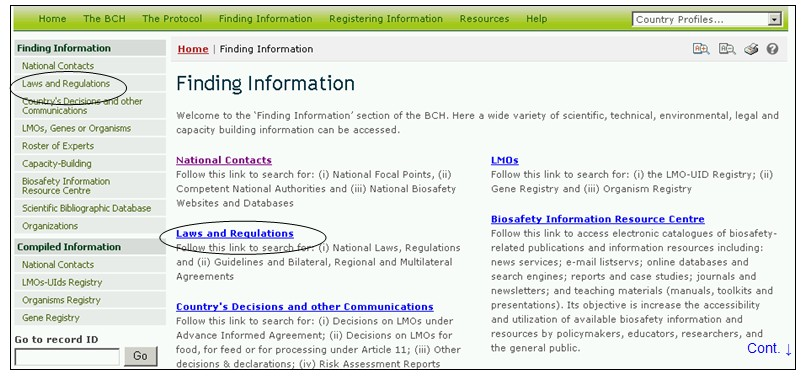
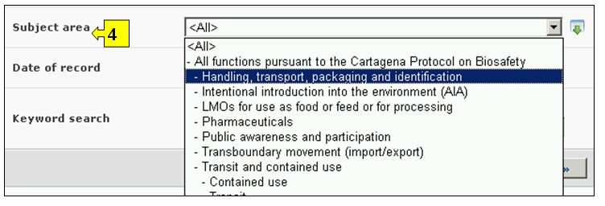
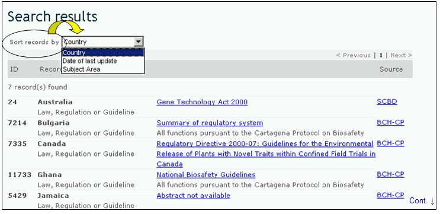
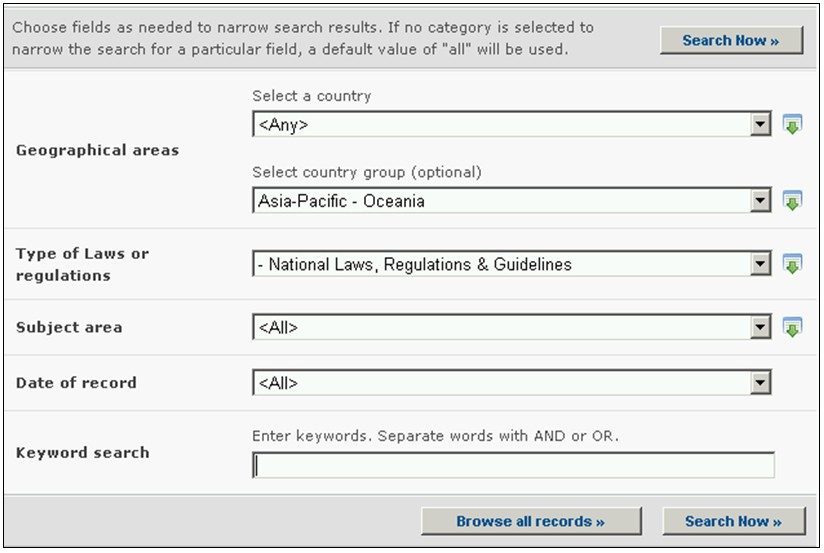

URL: http://bch.cbd.int/database/laws/
在卡塔赫纳议定书下，缔约方负责通过生物安全信息交换所提供本国有关法律和规定的信息。
可通过导航工具条上的查询信息下拉菜单上的链接、或通过查询信息页面左侧菜单中的链接或同一页面上关于法律和规定的文字介绍中的链接进入搜索法律和规定的界面。

图 17
在本数据库中用户可搜索：
1. 国家法律；
2. 国家规定；
3. 国家准则；
4. 双边协议
5. 多边协议；和
6. 区域协议。
在 搜索法律和规定 页面上有六个搜索标准框，可用于对该数据库中的搜索进行进一步限定。每一个搜索标准框均有一个下拉式菜单，用于选择所需的标准。每一个下拉菜单的缺省设置是菜单列表顶端的第一个选项。在每一个方框的右侧有一个按钮，使用户可以启动多重选择。一旦进入多重选择模式，可在按住Ctrl（控制）键的同时点击有关标准从而在选择中添加更多标准。

图 18
方框1[选择一个国家]在下拉菜单中列出了所有国家名，以便用户选择一个或多个具体国家进行搜索。

图 19
方框2[选择国家集团]在下拉菜单中列出了国家集团名，以便用户选择一个或多个具体的国家集团进行搜索。国际集团清单包含所有主要的地理或政治国家集团，并允许将搜索限定在只由选定的集团成员提交的纪录条范围内。

图 20
方框3[法律和规定类型]列出了数据库中已有的所有法律和规定类型，并允许用户将搜索限定在（一）国家法律、规定和准则；或（二）双边、区域和多边协议。

图 21
方框4[主题领域]列出了与执行议定书有关的法律和规定的主题。这样用户可将搜索限定在一个或几个主题领域。

图 22
方框5[记录日期]允许用户根据数据纪录条在生物安全信息交换所登记的日期限定搜索范围。下拉菜单提供了将搜索限定在某一选定时间间隔（如“前一天”、“上个月”、“去年”等）内的若干个选项。

图 23
方框6[关键词搜索]可使用关键词缩小搜索范围。用户可使用标准关键词句法（结合使用“和/或”）搜索多个词或词的核心部分（如“进口或出口”）。使用关键词进行的搜索结果只显示含有与被搜索文字完全一样的纪录条而不会包含未纳入的同义词（例如，只用一个关键词“Maize”(玉米)进行搜索的结果包括含有“Maize”的纪录条而不包括含有“Corn”或”Zea mays”（玉米同义词）的纪录条。

图 24
搜索页共有三个按键用于生成查询结果。 键（搜索界面的顶端和底部均有）使用户根据在搜索功能方框中选择的搜索标准启动搜索。搜索结果缺省设置为根据国家名字母顺序排列。 (位于搜索界面的底部)使用户可获得本数据库中所有记录条的列表。

图 25
搜索结果 页位于纪录条上方，具有对搜索结果进行排列的功能。这可用于根据具体信息类型的标准对纪录条进行排列。注意当用户选择不同搜索标准时，排列标准也随之改变。

图 26
示例：用户想查询大洋洲国家的法律和规定。在选择国家集团方框中选择亚洲-太平洋-大洋洲。在法律或规定类型方框中选择国家法律、规定和准则。点击 搜索结果显示出来，用户可选择任何纪录条对来自该区域具体国家的文献进行研究。

图 27

图 28